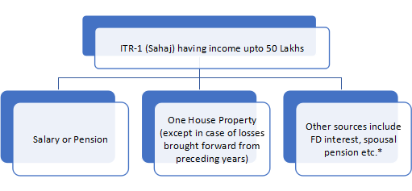

{{ serviceSite?.name | uppercase }}
{{ serviceSite?.head }} {{ serviceSite?.description }}
{{ ssPackage?.spackageDetail?.description }}

* apart from Lottery, Racehorses, Legal Gambling etc.
Eligible individuals for ITR-1 SAHAJ (Hindi terminology meaning 'easy')
Individuals who have earned their Income for a Financial Year only through the following means are eligible to fill the ITR-1 SAHAJ form.[4]
- {{ ssEligibility?.seligibility?.description }}
NOTE: Further, in a case where the income of another person like spouse, minor child, etc. is to be clubbed with the income of the assessee, this Return Form can be used only if the income being clubbed falls into the above income categories.
Manner of filing this Return Form
This Return Form can be filed with the Income-tax Department in any
of the following ways,:-
-
A.electronically on the e-filing web portal of Income-tax
Department (www.incometaxindiaefiling.gov.in) and verified in
any one of the following manner-
- a.digitally signing the verification part, or
- b.authenticating by way of electronic verification code (EVC), or
- c.by sending duly signed paper Form ITR-V (Acknowledgment) by post to CPC The Form ITR-V should reach within 120 days from the date of e-filing the return.
- B.in paper form, at the designated offices of Income-tax Department, along with duly signed Form ITR-V. This mode of furnishing return is permissible only in case of super senior citizens (i.e. an individual of the age of 80 years or more at any time during the previous year).
Eligible individuals for ITR-1 SAHAJ (Hindi terminology meaning 'easy')
-
A.This Return Form should not be used by an individual who –
- (a) is a Director in a company;
- (b) has held any unlisted equity shares at any time during the previous year;
- (c) has any asset (including financial interest in any entity) located outside India;
- (d) has signing authority in any account located outside India; or
- (e) has income from any source outside India.
-
B.This return form also cannot be used by an individual who has any income of the following nature during the previous year:-- a.Profits and gains from business and professions;
- b.Capital gains;
- c.Income from more than one house property;
-
d.Income under the head other sources which is of following
nature:
- a.winnings from lottery;
- b.activity of owning and maintaining race horses;
- c.income taxable at special rates under section 115BBDA or section 115BBE;
- e.income to be apportioned in accordance with provisions of section 5A; or
- f.agricultural income in excess of ₹5,000.
-
C.Further, this return form also cannot be used by an individual who has any claims of loss/deductions/relief/tax credit etc. of the following nature:-- a.any brought forward loss or loss to be carried forward under the head ‗Income from house property‘;
- b.loss under the head ‗Income from other sources‘;
- c.any claim of relief under section 90 and/or section 91;
- d.any claim of deduction under section 57, other than deduction under clause (iia) thereof (relating to family pension); or
- e.any claim of credit of tax deducted at source in the hands of any other person.
Submission of ITR-1 SAHAJ form
The form can be submitted physically at any Income Tax Returns Office.
An Acknowledgment Receipt can be obtained upon submission. In case of
Electronic Filing[5] of the form there are two alternatives. Firstly,
if a Digital Signature is obtained, the Form is uploaded online.
Secondly, the Form is downloaded, printed, signed, and a copy of the
acknowledgement is sent by post to the Income Tax Department's office
in Bengaluru. ITRV can now be verified online using Aadhaar Card or
Electronic Verification Code (EVC). The EVC can be generated either
via One Time Password sent to email and registered mobile number (if
income is less than INR 500,000) or via Net Banking. After online
verification Income Tax Assesses is not required to send ITRV to
Bangalore CPC.
DOCUMENTS REQUIRED
- {{ ssDocumentRequired?.sdocumentRequired?.name }}